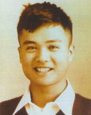
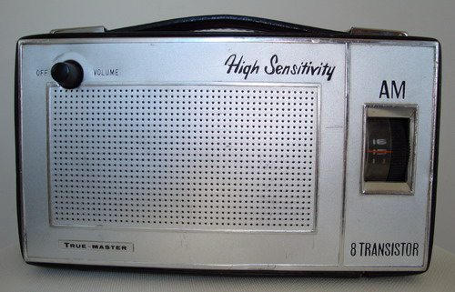

冯冯翦影
(1)夏威夷寓所之海景 我终于搬来夏威夷，住在偏僻的岛上海角，望着大洋十多浬，白浪翻滚，令我怀念澎湖，我却写不出文章或音乐。 |
|
(2)斜阳西下 |
|
(3)望海 |
|
 |
(4) 1949年培正中学三角小旗 |
(5) 2004年，阿强摄于夏威夷(1──5图) |
|
( 1949年5月，摄于培正校园。) 49年4月24日，共军解放南京之后，围攻上海。 广州市出现了许多国军部队，在主要街道放哨站岗，设立拒马铁丝网，检查行人与车辆，并且实施宵禁，还有几十辆坦克车和装甲车在巡逻，又有宣传车在街上广播政治口号：“三民主义万岁！”“中华民国万岁！”“蒋总统万岁！”“共产匪徒是千古罪人！”，吵得震天响，到处墙上也涂上了同类标语，还有“反共必胜，建国必成！”“保卫大广州！” 数十万难民与流亡学生涌进广州市，火车站，公车站，学校，都住满了他们。穿着深绿军衣红十字挂子的伤兵荣军成群结队闯戏院闯食肆，咆哮吵闹，类似上海的情况，国军飞机天天在上空出现，野马式战斗机矫捷的小队飞行似乎带来一些安抚作用。 培正校园内平静如常，花园美丽的芍药花盛开，学生们好像身在香格里拉，一些也没有暴风雨即来的紧张，我依然教夜校义学，还在走廊灯光下开夜车温习，应付大考和毕业试这两件最重大的考试，我的心情不免担忧着时局，我无法想像一旦共军占领广州的情况，我们会不会遭到战火的摧残伤害？会不会被拖出去人民大会给斗争公审，像华明所说的山东那样？ 大考与毕业考，我都顺利完成了，成绩也差强人意，大考得到全级的第五名，毕业考得第三名，毕业典礼在东山教堂举行，我没有亲人来观礼，我父亲不来，我母亲也没来，我像是一个孤儿。孤零零地上台接受证书与奖状。 |
|
大队长下令叫我们人人剃光头，理发兵已经在寝室外开始为我们落发。祖义不知从那一个市一中同学借到了一只简单照相机，大概是在广州买的“博司”机，他来找我说： “马上就要剃光头了，我们来拍张照片留念好吗？一张有发的，剃光头又拍一张落了发的。” “绝对赞成！”我说：“我们快拍吧！” 祖义、何毓、杨楷超、我，一共四个人，就在附近的日造防空洞的外面小丘拍照，一张是我个人的，坐在石头上面，一头曲卷的褐发，一双深深的眼睛，含笑眺望的姿态。第二张照片是和祖义和何毓的合照，祖义在中间，手撑住我，另一边是何毓。第三张是祖义独影，两手叉腰，挺神气的。第四张是杨、祖和何三人合影，祖在中间。 这几张照片后来都给我保存着，永远放在玻璃垫下，常常回味当年，只是风消云散，好友已不知下落，空余魂牵梦萦了。 (1949年11月初摄海军军官学校) |
|
|  有一个马公街上的照相馆老板洪先生，也是到测天岛来做海军半天工的兼职士官，做的是木工，他天天早上带十六岁的儿子来上班，中午就回家去做照相生意，后来的日子中，他替我拍摄了不少照片，感谢他的照相技术，留下了我的最漂亮的青春影子。 (1957年，被派往澎湖要港司令部任少尉外事连络官，身穿便装在马公市照相留影，其时二十二岁多。) |
|
有一天晚上，忽然来了陌生的夫妻客人，自我介绍是曹先生和太太，先生的口音是上海人，太太是广东人。 “我们是国际青年商会的董事。”曹先生说：“我们要举办中国十大杰出青年的选拔，我们已经有人提名了你冯士雄先生作为代表文学成就的候选人之一，特别来通知你一下。” “你们提名我？我不敢相信，我又没有什么成就，不算是文学家。” “我们认为你已经很有成就，你不必过谦了。” 选拔的结果，由各大媒体发表这中华民国首届十大杰出青年的当选名单，其中的一个就是我，代表以文学著作成就而当选，其他九位，有心脏专科医师、数学家、百货公司董事长、美术设计家、法学家......等等各种专门人才，由于我是最年轻的一个，就得分最高，无形中成为冠军，其实这项创举的选拔奖，在后来多年，年年有选，不再希奇，当年首届可是一件大事，各种媒体争相报导，电视与电影新闻、报纸、刊物、广播......无不大大宣扬。 颁奖典礼，在圆山大饭店金龙厅举行，我带母亲乘坐计程车到达，青商会的会员，都是四十岁以下的青年商人，都来迎接，我扶着母亲走进大厅会场，全场来宾都鼓掌欢迎，我母亲平时穿的是破补旧衫，这一天我给她穿上我特买的新外套，定做绣花旗袍，绣花鞋，居然有一点点贵妇夫人的样子了，只要她不开口说话，谁看得出她是个广西山地的穷人村姑？谁看得出她只不过是一个没落旧家族的侍妾？人靠衣装，一些也没错，她很斯文地移步，含笑不语，人人都尊敬这位冯老太太，可能还以为她是大家闺秀呢，怎知我母亲是个不太识字的穷苦老太婆？ 我自己那天没穿军装，因为我的预官延期役快将期满了，而且我没有那套漂亮的像校级军官才有的深色灰绿呢质军服，我只有草绿布质的野战服，不够体面，这是对社会露面，我就穿了西装，也是紧着连夜做的铁灰达克龙西服，灰银领带，黑皮鞋，一如我招待法语国家元首的场合所穿，事实上，我已经很少穿军服了，由于我的工作特殊，有时侯穿军服反而不方便，军方也不苛求我穿军服。 |
|
我母亲被安排坐在台下第一排中央，我则与其他得奖人并排站在台上，我被安排站在最中央，实际上只有九个人出席，有一个人因故缺席，因此我的左右两边各有四人，我又是最年轻的一个，因此就显得非常突出了，上百的摄影机与电视镜头对着我们，闪光不停，射灯猛烈，把我照得眼花，看不清台下。 主任委员王云五先生致词，叶公超先生讲话，青商会主席程志新讲话，然后逐一介绍十位得奖人，颁授每人一座“金手奖”，是大理石为座的铜制品，相当沉重的！每人捧着它，先后致词，过程先后弄了两三小时，站也站累了，手捧那座奖也麻了，好不容易礼成，全体在台下聚餐，那时所有的媒体记者都围上来访问，我忙于回答，一口也没空吃到，只喝一点果汁。 |
|
不管怎样，那是我有生以来头一次获得这样的奖励，被称为十大杰出青年之一，不能不说是异数，也不能说心中不惊喜，受宠若惊，想到今日的殊荣，又想起多年经历的凄凉辛酸与坎坷苦难，在海军所受的囚禁与刑罚侮辱，我再也禁不住热泪奔流了，我母亲也在流泪，人们可能以为我是喜极而泣，殊不知我是回想起多年的苦楚啊，我两手掩面，我母亲递给我桌上的餐巾纸给我拭干泪水，我知道媒体的焦点都在我们母子身上，并不因为我比其他人杰出，而是因为我最年轻，多少还有些孩子气，还有我的母亲也在流泪。 我情绪平静下来以后，起来向青商会全体致谢，然后在众人掌声中，我扶起我母亲离开会场。 |
|
原载《皇冠》第484期：1994年6月号
Peter Faun (right) showing a French journalist (2nd from right) from MATCH magazine how he design of Chinese Monotype works.On the left is an officer from information Bureau, Taiwan, 2nd from left is publisher Wang Tih-Wu (王惕吾)of United Daily News, Taipei.
Time of picture : October 1965
United Daily News photo
注：图文为冯冯早年申请移民美国的自备资料。
冯冯搭乘美国密歇根号，从基隆港启航，
于1965年12月7日抵达温哥华定居。
移民官坐在客厅一角的沙发上，是个高高瘦瘦的中年人，他叫我填写申报表格，我签了字，他盖了移民局的官印，又签了他本人的字，手续简单明了就算完成了。移民官撕下了表格的一份副本，只有一英寸那么宽窄的一条条子，说：“这就是你的收据，也就是你的永久居留证了，千万别遗失！好好保管！”
抵温翌日，温哥华《太阳报》刊登采访报导。

冯冯携带来加的收音机。
摄影背景应是温哥华的史丹利公园(STANLEY PARK)，
冯冯在《紫色北极光》一书译此园“诗丹丽”，详尽写下此园之美。
那一年的六月和七月,是我们到加拿大以后心情较为开朗的日子。母亲与我都有一份工作，两人收入加起来有三百多元加币，除了付房租、付伙食开销及汇钱给我父亲之外，我们还能省些钱下来。苦了那么久，我觉得我应该带母亲到附近的名胜风景去看看，散散心了。 这正是北极国一年中唯一最好的季节，阳光明媚，气温在华氏六十五度至八十度之闲，到处都是万紫千红的花卉，绿叶婆娑，鸟语千啭。 母亲仍是主张省钱，不肯出去游玩，每一个周末我都得费了一大番唇舌才能说服她跟我去旅行。我也不能怪她，我们穷困得太够了。 |
有一个周末我和母亲到温哥华岛去，我们乘搭巴士，巴士开到轮渡上，渡过乔治亚海峡的一百里航程。那是一艘相当巨大的轮船，大约有五千吨排水量，上层甲板是游艇格局的餐房与回廊大厅，下两层是有如登陆舰LST般的大肚子，可以容纳大约一百辆汽车，船尾也像登陆舰那般地可以放下吊桥装卸车辆。这艘轮渡全部刷成白色，只有那座斜插的又胖又矮的单烟筒是黑色的。这船全身胖大，船尾是典型的加拿大式，有一段像滑板般的斜面，自上而下，突出在后面，船尾的旗杆上飘杨着加拿大国旗--那是三等分的旗面，两端是红色，中间的一段是白底上面有一个红色的枫叶形图案。 这艘轮渡‘温哥华女王号’在平静的乔治亚海峡中航行，穿过许多狭窄的水道，经过处处森林密布的小小岛屿，座座白红两色相间的小小灯塔，还有岛屿上水边的清雅别墅，水光山色，倒影黛绿涟涟波动，大群海鸥在船尾追随着翻滚的漩浪，它们时而高飞，时而低翔，船上后甲板许多游客在椅上晒太阳眺望，全都是白人，只有我们母子是异国人。 母亲这时身穿一袭我买给她的象牙色薄呢风衣，白发上包着湖绿色头巾，倚在白色铁栏杆边上远眺含笑。加拿大枫叶旗在她后面的背景中飘扬不停，海鸥飞翔，青山绿水，航迹沸白，我持着电影机，拍摄彩色影片。拍完影片又拍彩色照片。母亲此时神情愉快，看来好像只是四五十岁左右，不像是六十多岁的人。后来我将这些照片放大为十二吋的巨照，那是母亲历来最美最有风度的照片，居然是一位贵夫人的样子了。 |
冯冯故居
前永忏楼：XXXX Slocan Street，Vancouver，B.C. Canada (1967──1977)
那是一座白色的房子，式样很古旧，前面有一个很宽长的走廊，廊前有四根巨大的圆柱，房顶高耸，颇有失修的零乱瓦片。房子式样是所谓“殖民地式样”的，在绿荫相映之下，也颇有些小小气派，看来是蛮宁静的。 前院外面就是巴士站，对面有一个很大的草地公园，草坡广阔，每边有上千尺的长度，再看不远处又有两家小店，回头望望，可以看见温哥华市区在遥远的西边低地，又可以望见北岸的雪峰，这地点看来好合我意，我立刻就决定要买了。
(版注) 1997年的夏天，冯冯说到莫斯科出席“雪莲仙子”首演前，得学回早已忘却的俄语。我于是开车， 载冯冯到Burnaby市 Metrotown Chapters书店，购买俄语学习录音带。途中，冯冯一时兴起，想到以前的旧居看看。到了目的地，冯冯也不下车，在车内凝视着旧居前院与后巷庭园，无限回忆。在这儿，冯冯完成文学著作有《昨夜星辰》、《冰山后面的迷雾》、《柯飘湖》、《蒙眼的女神》、《冰崖》与永忏楼随笔数十篇。
永忏楼
永忏楼：XXXX West 10 Ave，Vancouver，B.C. Canada (Oct，1977──1998)
网注：近长烟窗的西阁楼为冯母卧室，东阁楼则为冯冯写作卧室。那一年和众佛友帮冯冯搬家，随众上楼搬运参观，阁楼的天花板呈四十五度倾斜，前后拱成金字塔，巨大的写字台，临北窗眺望远山，冯冯的文学与佛学著作《紫色北极光》、《哭泣的紫枫》、《希望的火炬》、《夜半钟声》、《禅定天眼通之实验》、《天眼慧眼法眼的追寻》、《太空科学核子物理学与佛理的印证》、《健康长寿释疑》、《巴西来的小男孩》、《空虚的云》与佛教圣乐皆写成于此。
佛坛之左为韦陀像，中间为释迦牟尼佛像，右为送子观音像(不在图中) 。
 右图为永忏楼平面图(座北朝南)，为应付众多访客，正门处放置不少拖鞋，客厅除了两张沙发外，亦摆设十多张摺椅。室内杂物颇多，报纸、杂志、书册、传单、纸张、箱子等等，零乱散布。左上角近窗口处，有一支直立座灯，不套灯罩，一盏电灯泡，普照诺大的客厅。
右图为永忏楼平面图(座北朝南)，为应付众多访客，正门处放置不少拖鞋，客厅除了两张沙发外，亦摆设十多张摺椅。室内杂物颇多，报纸、杂志、书册、传单、纸张、箱子等等，零乱散布。左上角近窗口处，有一支直立座灯，不套灯罩，一盏电灯泡，普照诺大的客厅。
平日，有客人拜访，冯冯煮了开水，以甘草泡浸成芳香的热饮，佐以花生奉客，天南地北的聊上好几个小时。
后永忏楼
xxxx West 12 Ave，Vancouver，B.C. Canada (1990──2004)
2002年，摄于寓所希腊式楼房门前。
网注 ：1990年，为避骚扰，冯冯于居家附近另觅寓所， 潜心创作《D小调第一号钢琴协奏曲》、《Ｅ短调小提琴第１号协奏曲》、《牧神之夜》、《水仙少年》与《雪莲仙子》等古典音乐。1997、1998年 撰写“学佛推理随笔”，2000、2001年执笔“佛法文集专栏”，2003年《雾航》回忆录完成于此。

摄于夏威夷
2004年，冯冯的台湾身份证照片。